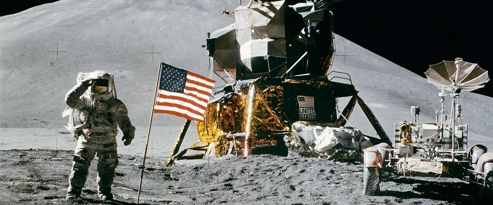

Tussen juli 1969 en december 1972 heeft de NASA zeven bemande vluchten uitgevoerd met als doel mensen op de maan te brengen. Zes van deze vluchten waren succesvol en brachten ieder twee mensen op de maan. De zevende vlucht, van Apollo 13 werd door een ongeluk voortijdig afgebroken.
Deze mensen hebben op de maan gelopen:
Neil Armstrong - Apollo 11 - juli 1969
Edwin Aldrin - Apollo 11 - juli 1969
Charles Conrad - Apollo 12 - november 1969
Alan Bean - Apollo 12 - november 1969
Alan Shepard - Apollo 14 - februari 1971
Edgar Mitchell - Apollo 14 - februari 1971
David Scott - Apollo 15 - juli 1971
James Irwin - Apollo 15 - juli 1971
John Young - Apollo 16 - april 1972 (tevens aan boord van Apollo 10, maar zonder maanlanding)
Charles Duke - Apollo 16 - april 1972
Gene Cernan - Apollo 17 - december 1972 (tevens aan boord van Apollo 10, maar zonder maanlanding)
Harrison Schmitt - Apollo 17 - december 1972
Op elk van de missies bleef een astronaut achter in het deel van het ruimteschip dat rond de maan bleef cirkelen terwijl de andere twee zich op de maan bevonden. De missies van de Apollo 8, 10 en 13 hadden ook ieder drie man aan boord en cirkelden rond de maan - in het geval van de Apollo 13 slechts één keer rond - maar landden niet. De drie astronauten die aan twee maanmissies deelnamen zijn Lovell, Young en Cernan. Van deze drie heeft alleen Lovell niet de gelegenheid gehad op de maan te lopen
Deze mensen kwamen dicht bij de maan maar landden niet